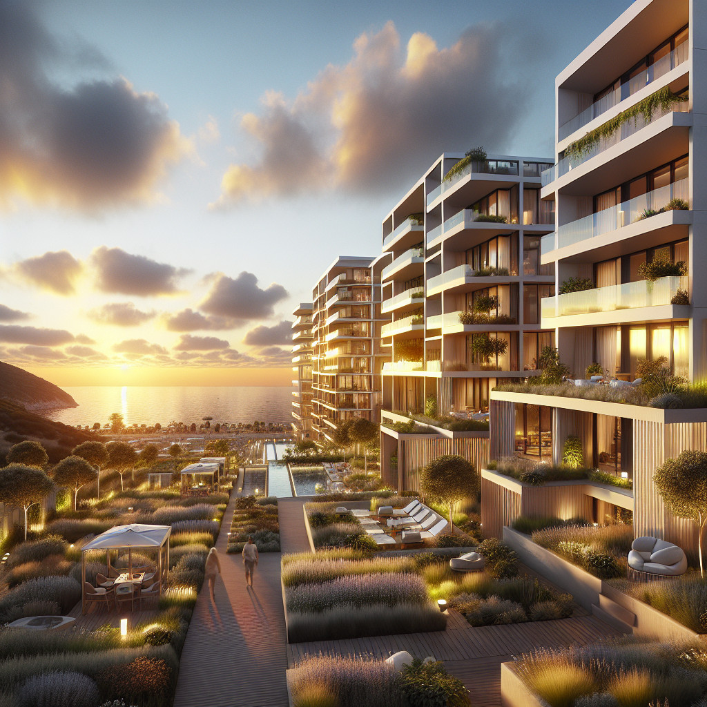

4 рабочие стратегии инвестиций в недвижимость Крыма: как выбрать под бюджет и цель
Универсально выгодной схемы инвестиций в недвижимость Крыма не существует. Стратегия выбирается под конкретную цель, срок владения и формат участия. Одно дело — сохранить капитал с минимальными хлопотами, другое дело — получать активный доход через управление арендой.
В практике работают 4 основные стратегии: долгосрочная аренда жилья, посуточная или сезонная аренда, покупка на этапе строительства и приобретение ликвидного объекта для перепродажи. Каждая требует разного подхода к проверке объекта и документов.
Ключевые критерии сравнения: размер бюджета, горизонт инвестиций, готовность к операционному участию, допустимый уровень риска и сценарий выхода. Если по объекту недостаточно данных для проверки, вывод должен быть не окончательным, а проверочным.
Теперь главное — понять логику выбора и что проверять перед решением.
Как выбрать стратегию: сначала цель, потом объект
Выбор стратегии начинается с определения цели инвестиций. Сохранение капитала требует одного подхода, регулярный денежный поток — другого, быстрая перепродажа — третьего. Смешанные сценарии возможны, но усложняют критерии отбора объекта.
Срок владения влияет на допустимый уровень риска и выбор локации. Для горизонта 1-2 года критична ликвидность при продаже. Для 5-10 лет важнее стабильность арендного спроса и техническое состояние объекта.
Уровень личного участия определяет операционную нагрузку. Самостоятельное управление посуточной арендой требует времени и навыков. Делегирование управляющей компании снижает доходность, но экономит ресурсы. Пассивное ожидание роста цены подходит не для всех локаций.
Мини-матрица выбора стратегии:
- Цель «сохранение капитала» + срок 3-5 лет + низкое участие = долгосрочная аренда в понятной локации
- Цель «денежный поток» + срок 2-3 года + высокое участие = посуточная аренда в туристической зоне
- Цель «рост капитала» + срок 1-3 года + среднее участие = покупка на этапе строительства или ликвидный объект под перепродажу
- Смешанная цель = комбинация стратегий или выбор универсального объекта
Парадокс, но факт: один и тот же объект может быть выгоден для аренды и убыточен при перепродаже. Локация, идеальная для туристов, не всегда ликвидна для постоянного проживания.
Стратегия 1: покупка квартиры в Крыму для долгосрочной аренды
Долгосрочная аренда подходит инвесторам, которые предпочитают стабильность активному управлению. Формат логичен при наличии понятного спроса на аренду жилья и готовности к горизонту владения от 3 лет.
Важные характеристики объекта: жилая функция без ограничений, транспортная доступность, развитая инфраструктура района, техническое состояние дома и инженерных систем. Спрос на долгосрочную аренду менее сезонен, чем на посуточную, но зависит от экономической активности региона.
Обязательные проверки включают юридический статус объекта и право собственности продавца. Нужно запросить выписку из ЕГРН, документы-основания возникновения права, сведения об обременениях и ограничениях. Важно уточнить назначение помещения и допустимый способ использования.
Техническая проверка охватывает состояние квартиры, дома и коммунальных систем. При наличии перепланировок требуется техническая документация и подтверждение их законности. Скрытые дефекты могут потребовать незапланированных вложений.
Как результаты проверки влияют на решение: обременения или ограничения права собственности делают объект неподходящим. Серьезные технические проблемы требуют пересчета бюджета. Неопределенность по документам — сигнал для дополнительной проверки, а не для немедленной покупки.
Эта стратегия теряет смысл при проблемах с правом собственности, даже если объект визуально привлекателен.
Стратегия 2: посуточная аренда в Крыму и сезонный формат
Посуточная или сезонная аренда требует активного участия в управлении объектом. Подходит инвесторам, готовым заниматься маркетингом, бронированием, уборкой или контролем управляющей компании. Доходность зависит от загрузки, которая не гарантирована.
Ключевые факторы анализа: сезонная загрузка как ориентир, а не обещание, привлекательность локации для туристов, правила использования объекта, расходы на обслуживание и управление. Высокий сезон может компенсировать низкую зимнюю загрузку, но это требует проверки.
Документальная проверка включает назначение помещения и возможность использования для краткосрочной аренды. Нужно запросить документы по объекту, данные по коммунальным платежам и обслуживанию дома, информацию о возможных ограничениях эксплуатации.
Важно понимать разницу между локацией, подходящей для туристической аренды, и локацией, ликвидной при перепродаже. Объект в туристическом районе может быть менее интересен покупателям, ищущим жилье для постоянного проживания.
Опасность стратегии — ориентация только на обещания высокой загрузки без анализа реальных данных по аналогичным объектам. Операционные расходы и периоды простоя могут существенно снизить фактическую доходность.
Посуточная аренда подходит не всем объектам и не всем инвесторам — это активная модель с операционными рисками.
Стратегия 3: новостройки Крыма для инвестиций на этапе строительства
Вход в проект на этапе строительства подходит инвесторам с горизонтом ожидания от 1-3 лет и готовностью к риску задержки сдачи объекта. Потенциальные преимущества — цена ниже рыночной на момент ввода, но это не гарантировано.
Обязательная проверка включает правовую схему проекта, проектную декларацию, разрешение на строительство, документы на земельный участок, стадию реализации проекта. Нужно понимать, на каком основании застройщик ведет строительство и продает объекты.
Документы для запроса: договорная модель покупки (долевое участие, инвестиционный договор, другие схемы), актуальные сведения о проекте, правовой статус земельного участка, документы застройщика в пределах доступной проверки.
Возможные сценарии после ввода объекта: удержание для личного использования, сдача в аренду, перепродажа. Каждый сценарий требует разного подхода к выбору локации и типа объекта. Обещать конкретный результат нельзя — рынок может измениться.
Красный флаг — отсутствие прозрачности по документам проекта, статусу земли или разрешительной документации. В таких случаях решение о покупке стоит отложить до получения полной информации.
Стратегия требует тщательной проверки проекта и понимания рисков, связанных со строительством.
Стратегия 4: покупка ликвидного объекта для перепродажи
Сценарий перепродажи требует дисциплины в расчетах и точного понимания рыночного спроса. Подходит инвесторам, готовым к активному поиску объектов и анализу ликвидности локации. Горизонт обычно от 6 месяцев до 2 лет.
Ключевые проверки: юридическая чистота объекта, техническое состояние, глубина спроса в сегменте, потенциальные вложения в ремонт или подготовку к продаже, наличие ограничений и задолженностей.
Документы для запроса: выписка из ЕГРН, техническая документация, сведения о перепланировках при их наличии, данные об обременениях и задолженностях по коммунальным платежам и взносам на капремонт.
Важно понимать разницу между ликвидной локацией для аренды и ликвидной локацией для перепродажи. Туристический район может быть привлекателен для краткосрочной аренды, но менее интересен семьям, покупающим жилье для проживания.
Сценарий становится сомнительным при необходимости значительных дополнительных вложений, длительных сроков подготовки объекта к продаже или слабом спросе в сегменте. Расходы на сделку, ремонт и период экспозиции могут съесть потенциальную прибыль.
Перепродажа требует точного входа и реалистичной оценки всех сопутствующих затрат.
Сценарные расчеты доходности: ориентиры без гарантий
Для понимания экономики разных стратегий рассмотрим сценарные расчеты на примере объекта стоимостью 9 000 000 рублей. Это ориентировочные данные, зависящие от конкретной локации, состояния объекта и рыночной ситуации.
Консервативный сценарий (долгосрочная аренда):
- Арендная ставка: 35 000 руб/месяц
- Валовый доход в год: 420 000 руб
- Операционные расходы (коммунальные, управление, ремонт): 120 000 руб
- Чистый доход: 300 000 руб
- Ориентировочная доходность: 3,3% годовых
Базовый сценарий (посуточная аренда):
- Средняя ставка: 3 500 руб/сутки
- Загрузка: 120 дней в году (с учетом сезонности)
- Валовый доход: 420 000 руб
- Операционные расходы (коммунальные, уборка, управление, маркетинг): 180 000 руб
- Чистый доход: 240 000 руб
- Ориентировочная доходность: 2,7% годовых
Важное уточнение: расчеты не учитывают периоды простоя, незапланированные расходы, изменения спроса и налоговые обязательства. Фактические показатели могут существенно отличаться в зависимости от управления объектом и рыночных условий.
Данный расчет не является финансовой рекомендацией и требует верификации всех входных параметров перед принятием инвестиционного решения.
Как сравнить 4 стратегии между собой по бюджету, риску, сроку и участию
Для выбора подходящей стратегии важно сравнить их по ключевым параметрам. Каждый подход имеет свои особенности по уровню вовлеченности, временным рамкам и характеру рисков.
| Стратегия | Личное участие | Горизонт | Сложность проверки | Чувствительность к локации | Сценарий выхода |
|---|---|---|---|---|---|
| Долгосрочная аренда | Низкое | 3-7 лет | Средняя | Умеренная | Продажа/смена стратегии |
| Посуточная аренда | Высокое | 2-5 лет | Высокая | Высокая | Продажа/переход на долгосрочную |
| Новостройка | Среднее | 1-4 года | Высокая | Средняя | Продажа/аренда после ввода |
| Перепродажа | Среднее | 0,5-2 года | Высокая | Высокая | Быстрая продажа |
Риски делятся на несколько категорий. Правовые риски связаны с документами и правом собственности. Операционные — с управлением и содержанием объекта. Рыночные — с изменением спроса и цен. Временные — с задержками в реализации планов.
Важно понимать: низкое личное участие не означает низкий риск. Пассивная стратегия может быть рискованной при неправильном выборе объекта или изменении рыночных условий.
Короткие профили инвестора:
- Консервативный: долгосрочная аренда в проверенной локации, минимальное участие, горизонт 5+ лет
- Умеренный: новостройка или качественный объект под аренду, средний горизонт, готовность к проверкам
- Активный: посуточная аренда или перепродажа, высокое участие, готовность к операционным рискам
Выбор стратегии зависит от соответствия вашего профиля требованиям конкретного подхода.
Ошибки и красные флаги при выборе недвижимости Крыма для инвестиций
Типовые ошибки могут превратить разумную стратегию в убыточную сделку. Важно распознать сигналы, при которых стоит остановиться и собрать дополнительную информацию.
Покупка без сценария выхода — частая проблема. Инвестор приобретает объект, рассчитывая «разобраться по ходу», но не учитывает ограничения по использованию или сложности с продажей в будущем.
Смешение личных предпочтений и инвестиционной логики приводит к переплате за характеристики, не влияющие на доходность. Красивый вид может не компенсировать неудобную локацию для арендаторов.
Ориентация на рекламу локации без проверки документов создает ложное чувство безопасности. «Перспективный район» может оказаться проблемным с точки зрения права собственности или разрешенного использования.
Игнорирование расходов на содержание, ремонт, управление и возможные периоды простоя искажает расчет доходности. Реальная прибыльность может оказаться значительно ниже ожиданий.
Красные флаги, требующие остановки:
- Непрозрачные или неполные документы на объект
- Ограничения по использованию, не соответствующие выбранной стратегии
- Сомнительные перепланировки без соответствующих разрешений
- Неполные сведения о доме, земельном участке или проекте
- Давление продавца с требованием быстрого решения
При обнаружении красных флагов корректный вывод — не отказываться от покупки немедленно, а сначала закрыть пробелы в проверке и получить недостающую информацию.
Что проверить перед покупкой независимо от стратегии
Независимо от выбранной стратегии инвестиций существует базовый набор проверок, который поможет избежать критических ошибок. Этот чеклист применим к любому объекту недвижимости в Крыму.
Перед началом проверки документов важно четко определить цель инвестиции: сохранение капитала, получение арендного дохода, перепродажа или смешанный сценарий. От цели зависят критерии оценки объекта и приоритеты в проверке.
Основные пункты проверки:
- Проверить юридический статус объекта и право собственности продавца
- Запросить актуальную выписку из ЕГРН и документы-основания возникновения права собственности
- Уточнить наличие обременений, ограничений, арестов и задолженностей по объекту
- Проверить назначение объекта и допустимый способ использования под выбранную стратегию
- Оценить техническое состояние объекта, дома и инженерных систем
- Запросить техническую документацию и сведения о перепланировках, если они проводились
- Проанализировать ликвидность локации под конкретную стратегию, а не в среднем по рынку
- Рассчитать возможные расходы на содержание, ремонт, управление и периоды простоя
- Для новостройки дополнительно запросить проектную декларацию, разрешение на строительство и документы на земельный участок
- Сопоставить планируемый сценарий выхода из инвестиции со сроком владения и готовностью к операционному участию
После каждой проверки важно оценить, как полученная информация влияет на целесообразность сделки и соответствие объекта выбранной стратегии.
Вывод: как принять решение без обещаний доходности
Стратегия инвестиций в недвижимость Крыма выбирается по цели, сроку владения, уровню личного участия и качеству конкретного объекта. Универсально выгодного подхода не существует — каждый сценарий имеет свои требования и ограничения.
Важно сравнивать не рекламные обещания, а реальный сценарий управления объектом и набор необходимых проверок. Долгосрочная аренда требует одних документов и анализа, посуточная — других, покупка новостройки — третьих.
К следующему этапу — детальной проверке конкретного объекта — можно переходить после определения стратегии и понимания критериев отбора. Если стратегия не выбрана или критерии размыты, поиск объекта будет неэффективным.
Остановиться и собрать дополнительную информацию стоит при обнаружении пробелов в документах, неопределенности по правовому статусу объекта или несоответствии характеристик выбранной стратегии. Правильное решение в таких случаях — не торопиться с покупкой, а сначала закрыть все вопросы по проверке.
FAQ
Для сохранения капитала обычно рассматривают долгосрочную аренду в понятной локации с минимальным операционным участием. Важны юридическая чистота объекта, техническое состояние и стабильный арендный спрос. Выбор зависит от горизонта инвестиций и качества конкретного объекта.
Долгосрочная аренда требует меньше операционного участия и менее зависима от сезонности, но может давать меньший доход. Посуточная аренда потенциально доходнее, но требует активного управления и сильно зависит от локации, сезона и туристического спроса. Выбор зависит от готовности к участию в управлении.
Обязательно проверить проектную декларацию, разрешение на строительство, документы на земельный участок и правовую схему проекта. Важно понимать стадию строительства, репутацию застройщика и планируемый сценарий после ввода объекта. Риски включают задержку сдачи и изменение рыночных условий.
Нужно анализировать не только сам объект, но и глубину спроса в сегменте, транспортную доступность, развитость инфраструктуры. Важно учесть потенциальные вложения в подготовку к продаже, расходы на сделку и реалистичные сроки экспозиции. Ликвидность для аренды и для продажи может различаться.
Минимальный набор: выписка из ЕГРН, документы-основания права собственности, сведения об обременениях и ограничениях, техническая документация. При наличии перепланировок — документы об их согласовании. Для новостройки дополнительно нужны проектная декларация, разрешение на строительство и документы на землю.
Сначала определите цель инвестиции и готовность к операционному участию. Затем сопоставьте стратегии по горизонту владения: долгосрочная аренда подходит для 3-7 лет, перепродажа — для 0,5-2 лет. Учтите сложность проверки объекта и чувствительность к локации. Низкое участие не означает низкий риск.